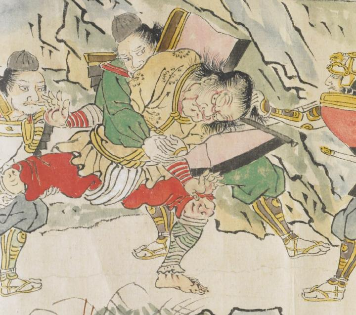

髪を振り乱し、赤い顔で口をへの字に曲げ、睨みつけている。大きなからだに黄色い上着を身にまとい、赤い腰巻きをまいている。後ろから抱え込まれ、髪の毛を引っ張られている。
出典：親書誌：U426_nichibunken_0079：酒天童子絵巻；シュテンドウジエマキ／日付：2006／資源識別子：U426_nichibunken_0079_0015_0001
Copyright (c)2010- International Research Center for Japanese Studies, Kyoto, Japan. All rights reserved.